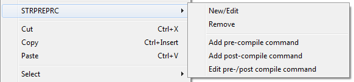
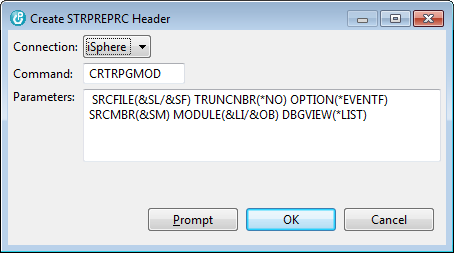

The STRPREPRC plug-in extends the context menu of the Lpex editor with the following menu items:

The available menu option are:
| New/Edit | - | Inserts a new header or prompts the base object creation command of an existing header. |
| Remove | - | Removes the entire header from the source member. |
| Add pre-compile command | - | Adds a pre-compile command to the STRPREPRC header. A pre-compile command is executed before the main object creation command. Multiple pre-compile commands can be added. |
| Add post-compile command | - | Adds a post-compile command to the STRPREPRC header. A post-compile command is executed before the main object creation command. Multiple post-compile commands can be added. |
| Edit pre-/post-compile command | - | Opens the command editor for the selected pre- or post-compile command. |
The following window is displayed when a new header shall be added to the source member:

| Connection | - | Connection that is used to verify and prompt the command. |
| Command | - | Command that is used for creating the object. |
| Parameters | - | Command parameters used for creating the object. |
The header is inserted into the source code before the current cursor position.